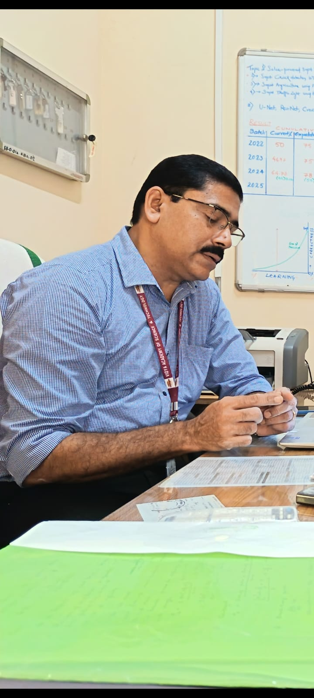
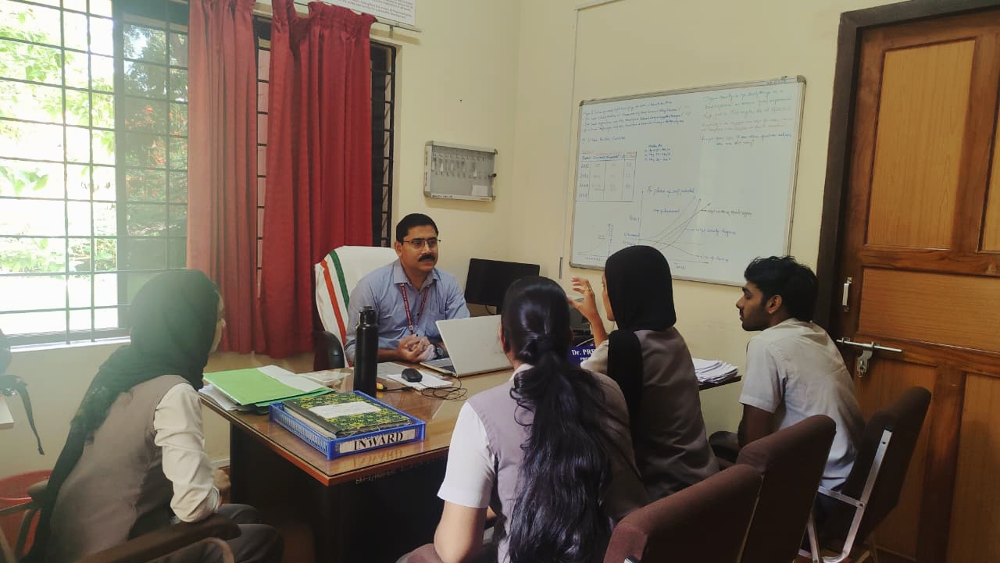

Strengthening Vidyut Raksha: A Faculty Consultation with Dr. Premanand B, VAST Thrissur

Dr. Premanand B
Head of Department, Vidya Academy of Science and Technology (VAST), Thrissur
Dr. Premanand is a retired faculty member of Government Engineering College (GEC) and currently teaches Control Systems at VAST. He was consulted for his expertise in control systems and electrical engineering principles relevant to the project's sensing and safety-threshold design.

Introduction
Floodwater that has come into contact with a fallen or damaged electrical conductor may carry live current, and it is visually indistinguishable from ordinary water. To assess the technical foundations of the proposed solution, Team Cygnus presented Vidyut Raksha to Dr. Premanand B, whose expertise lies in control systems and electrical engineering. This article documents his observations and the design improvements that followed.
The Project Presented
Vidyut Raksha is a compact, submersible sensor node that detects electrified floodwater in real time and warns nearby pedestrians before they enter a hazardous area. It applies voltage-gradient sensing between probes, based on step-potential principles from electrical safety engineering, and issues a two-tier alert: an immediate local warning through offline Wi-Fi and Bluetooth, and a wider, authority-linked warning through India's SACHET Cell Broadcast system. The team presented the sensing mechanism, the 12 V AC safety threshold, and the overall system architecture.
Dr. Premanand assessed the concept as relevant and well-founded, addressing a genuine and under-served safety gap. He then raised three technical concerns.
Concern 1: Locating the Extent of the Hazard
Dr. Premanand asked how effectively a voltage-gradient measurement from a single probe pair could estimate the extent of electrification, that is, how far the hazard spreads from its source.
The team acknowledged that a single probe pair measures the gradient only at its own location. The sensing design was therefore upgraded to a four-probe quadrupole cross array of two orthogonal pairs. This allows the node to calculate both the magnitude and the bearing of the voltage gradient through vector resolution. Combined with the node's fixed GPS coordinate and a distance estimate derived from step-potential decay, the system can project a probable hazard coordinate. The result is reported as an estimated bearing and distance rather than an exact measurement, since floodwater is not a uniform conductive medium.
Concern 2: Current Path Through Water and Earth
He observed that when a live conductor falls on a road, the road and the underlying earth already provide a ground path. As soil conducts electricity, he asked whether standing water would carry sufficient current to be independently hazardous.
Current divides between all parallel paths, in this case the earth and the surface water, in proportion to their conductivity. Floodwater typically contains dissolved salts, sewage and road runoff, which make it a highly conductive electrolyte, often comparable to or better than soil. Moreover, hazard does not depend on a large absolute current. It depends on the voltage gradient across a person's stride (step potential) or contact points (touch potential), as defined in IEEE Std 80. That standard adopts a reference human body resistance of 1,000 ohms to establish tolerable voltage limits, which indicates that even a modest fraction of leaked current in water can be lethal.
Concern 3: LoRa Communication Without Towers
Dr. Premanand asked whether LoRa communication is tower-based, as in mobile networks. The team clarified that it is not. Its research showed that the node requires only two components for communication: the specified LoRa module and an antenna. No cellular tower infrastructure is involved.
This finding also determined how the antenna is installed. An antenna must operate in free air and cannot be fully enclosed. Although waterproof antennas exist, communication fails when an antenna is fully submerged, because radio signals do not propagate effectively through water. The team therefore routes a cable from the sealed enclosure, through an IP68 SMA bulkhead feedthrough, to an antenna mounted on the same pole above the maximum expected flood level. The enclosure, probes and main electronics remain at ground level, so communication is maintained during flooding.
Conclusion
The consultation identified genuine gaps in the original design. The resulting improvements, multi-probe localization and the elevated antenna installation, are now presented as deliberate engineering decisions supported by recognized standards.
The three concerns raised during the consultation strengthened the technical credibility of Vidyut Raksha.
Standards Referenced
- IEEE Std 80, IEEE Guide for Safety in AC Substation Grounding.
- IEEE Std 81, IEEE Guide for Measuring Earth Resistivity, Ground Impedance, and Earth Surface Potentials of a Grounding System.
- IEC 60479-1, Effects of Current on Human Beings and Livestock.